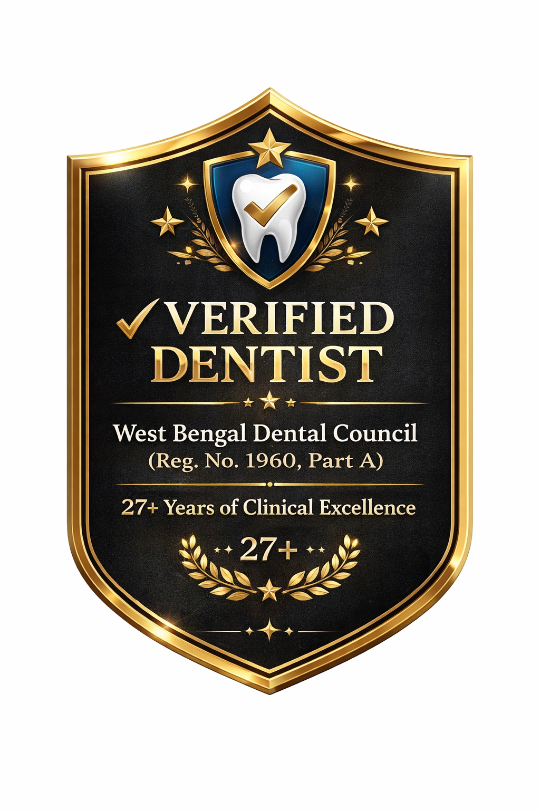

Dr. Sudip Roy
ডা. সুদীপ রায়
| Dr. Sudip Roy | |
|  | |
| Education |
Bachelor of Dental Surgery (B.D.S.) Buddha Institute of Dental Science & Hospital, Patna, India Advanced Dental Implantology Training Jadavpur University, West Bengal, India |
|---|---|
| License | WBDC Reg. No. 1960 |
Dr. Sudip Roy is an Indian Senior Consultant Oral & Cosmetic Dental Surgeon and Certified Dental Implantologist with over 27 years of clinical excellence.